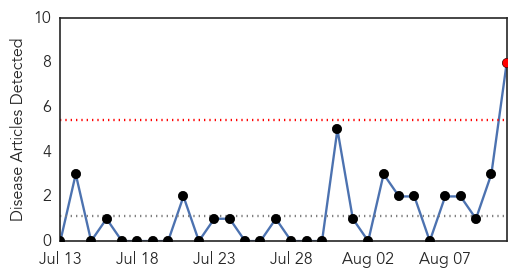
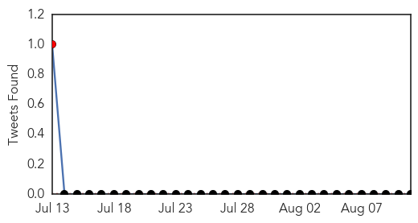
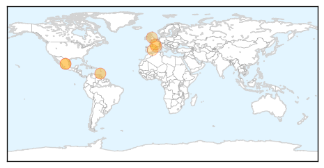
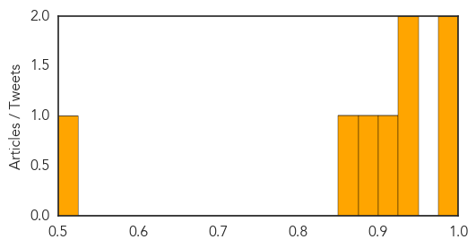
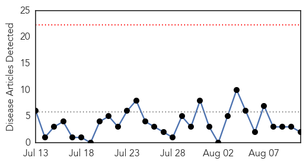
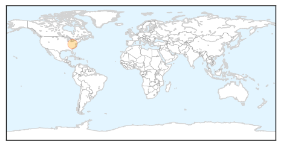

Chikungunya
30-Day Web Trend
1 alerts, 0 warnings

30-Day Twitter Trend
1 alerts, 0 warnings

Article Locations
Article Confidences
Top Articles:
- 0.984
- Chikungunya case in Spanish man; Americas outbreak grows
- 0.977
- Garland Resident Contracts Chikungunya in Mexico
- 0.937
- British woman loses sight in one eye after being bitten by mosquito
- 0.931
- Spain reports chikungunya case in Gandia man, acquired in Spain or France
- 0.909
- Woman loses vision after mosquito bites spread infection
- 0.889
- Spain reports first chikungunya case without travel history to endemic regions
- 0.864
- First Chikungunya Case in Spain is Reported to WHO
- 0.524
- Woman Loses Vision In Right Eye After Getting Bitten By Mosquitoes « CBS Atlanta
Top Tweets:
-
No tweets found for Aug 11, 2015
Measles
30-Day Web Trend
0 alerts, 0 warnings

30-Day Twitter Trend
0 alerts, 0 warnings

Article Locations
Article Confidences

Top Articles:
Top Tweets:
-
No tweets found for Aug 11, 2015